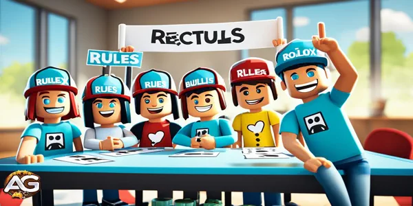

Discover how to get voice chat on Roblox with our easy guide. Unlock new ways to communicate and enhance your gaming experience on the popular platform.
Illustration: Discover how to get voice chat on Roblox.
Roblox is a huge online game platform that changed how we talk in virtual worlds. It now has voice chat, which makes playing games even better. You can plan with your team, chat with friends, or just talk more in the game. This guide will show you how to use voice chat on Roblox easily.
Key Takeaways
Roblox's voice chat feature allows for real-time communication with other players, enhancing the gaming experience.
Setting up voice chat on Roblox is a straightforward process, requiring a few simple steps in the game's settings.
Configuring microphone and audio settings is crucial for optimal voice chat performance.
Joining voice channels and finding games that support voice chat are important for leveraging this feature.
Maintaining proper etiquette and following guidelines is essential for creating a positive and respectful voice chat environment.
Introduction to Voice Chat on Roblox
Roblox is a popular online gaming site. It has grown and added new features, like voice chat. This feature changed how players talk and connect in Roblox, making games more fun and social.
The Importance of Voice Communication in Gaming
Voice chat in Roblox changed the game for players. It lets them talk in real time. This means they can plan strategies, share tips, and make friends easily.
This makes games more exciting and builds a strong community. It's not just about playing games; it's about connecting with others.
Overview of Roblox's Voice Chat Feature
Roblox's voice chat lets players talk like never before. They can chat, give advice, or just have fun while playing. It's easy to use and can be set up to fit what each player likes.
This feature also helps game makers and content creators. They can add real-time voice chat to their games. This makes games more fun and interactive for everyone.
"The integration of voice chat in Roblox has revolutionized the way players interact and communicate, fostering a sense of community that transcends the digital realm."
Prerequisites for Using Voice Chat on Roblox
To use voice chat on Roblox, you need a few things. You must have the right hardware and software. This makes sure you have a good voice chat experience.
Roblox Voice Chat Hardware Requirements
You need a microphone or headset for voice chat on Roblox. Many types of microphones work, like USB, 3.5mm, and laptop ones. Roblox voice chat hardware should give clear sound and work well.
Roblox Microphone Setup
Make sure your microphone or headset is plugged into your device, like a computer or phone.
Change the microphone volume and where it sits to get the best sound and less noise.
Check your microphone works right in the Roblox app.
Roblox Voice Chat Requirements for Software
You also need to set up your Roblox account and device right. This means:
Turning on voice chat in your Roblox settings.
Letting Roblox use your microphone and sound.
Turning off any extra sound settings that might mess with your chat.
Make sure you meet the roblox voice chat requirements. Then, you can join voice chats in Roblox easily.
Hardware Requirements
Software Requirements
Compatible microphone or headset
Proper audio input device connection
Optimized microphone settings
Enabled voice chat in Roblox account
Granted Roblox microphone permissions
Optimized device audio settings
"Ensuring your Roblox voice chat requirements are met is the first step towards seamless and engaging voice communication in the game."
How to Get Voice Chat on Roblox
Roblox's voice chat feature makes gaming more fun by letting you talk with friends in real time. It's great for planning, sharing news, or just chatting. We'll show you how to set up voice chat on Roblox for the best experience.
Enabling Voice Chat in Roblox Settings
Here's how to turn on voice chat in Roblox settings:
Open the Roblox app on your device.
Click the gear icon in the top-right corner for settings.
Go to the "Audio" tab in settings.
Find the "Voice Chat" option and turn it on.
Click "Done" to save your changes.
Configuring Microphone and Audio Settings
Make sure your microphone and audio are set right for voice chat. Here's what to do:
In "Audio" settings, pick your microphone from the dropdown menu.
Adjust the microphone volume to hear yourself clearly.
Speak into your microphone and check the audio meter to make sure it works.
If you have microphone problems, check the Roblox settings or support pages for help.
Follow these steps to how to enable voice chat on roblox, roblox voice chat settings, and roblox voice chat setup. You'll have a great time chatting with friends in Roblox.
Feature
Description
Voice Chat Activation
Toggle the voice chat feature on or off in the Roblox settings.
Microphone Selection
Choose the appropriate microphone device from the available options.
Microphone Volume
Adjust the microphone volume to ensure optimal voice input levels.
Audio Monitoring
Use the audio meter to test and monitor the microphone's performance.
"Enabling voice chat on Roblox is a game-changer, allowing for seamless real-time communication and enhancing the overall gaming experience."
Follow these steps to set up your how to enable voice chat on roblox, roblox voice chat settings, and roblox voice chat setup. You'll have a better gaming experience on Roblox.
Joining a Voice Channel
Joining a voice channel on Roblox is easy. It lets you talk with other players in real time. This makes your gaming better and helps you work with your team in games that have voice chat.
Finding Games with Voice Chat Support
To join a voice channel, find a Roblox game that lets you chat by voice. Not all games do this, but many popular ones like Jailbreak, Arsenal, and Tower of Hell do.
Look for the voice chat icon in the game's description or lobby to find games with voice chat. You can also ask other players or check online forums for the latest info.
Open the Roblox game you want to join.
Search for the voice chat icon or label in the game's details or lobby.
If the game has voice chat, you'll see a "Join Voice Channel" option.
Click on that option to join the voice channel.
After joining the voice channel, you can talk with other players in real time. This makes your game more fun and helps your team work better together.
Game
Roblox Voice Chat Support
Jailbreak
Yes
Arsenal
Yes
Tower of Hell
Yes
Check out Roblox games with voice chat to make your experience more interactive and fun. You'll work better with your friends and have a blast playing together.
Best Practices for Using Voice Chat on Roblox.
Best Practices for Using Voice Chat on Roblox
The Roblox community loves using voice chat. It makes games more fun and interactive. Here are some tips to make sure everyone has a good time. These tips will help you use roblox voice chat etiquette well. You'll be a great voice chat user.
Maintain Proper Microphone Etiquette
Make sure your microphone is in the right spot. This helps your voice come through clear and cuts out background noise.
Keep your volume right. It should be loud enough to hear, but not too loud. This makes it comfy for others to listen.
Try to find a quiet place to chat. This helps avoid distractions and unwanted sounds.
Tips for Using Voice Chat in Roblox
Talk clearly and with confidence. But don't shout or sound mean.
Be kind and don't use bad words or act out. Everyone should feel welcome.
Listen to your team and answer them. This helps everyone work together better.
Stay positive and friendly. A happy mood makes games more fun for everyone.
Following these roblox voice chat guidelines makes voice chat better for everyone. A little thoughtfulness and awareness can make the gaming community nicer and more fun.
"The true power of gaming comes not just from the game itself, but from the connections and community we build along the way. Voice chat on Roblox is a tool that can help us strengthen those bonds and create a more engaging, collaborative, and memorable gaming experience."
Etiquette and Guidelines for Voice Chat
The Roblox community loves using voice chat. It's key to keep the chat positive and respectful for everyone. The roblox voice chat rules, roblox voice chat conduct, and roblox voice chat community guidelines help everyone get along and have fun.
Maintaining a Positive and Respectful Environment
When you chat in Roblox, you meet players from all over. Here are some tips to make everyone feel welcome:
Be kind and polite to everyone, no matter who they are.
Don't use bad words or hate speech. It makes others feel bad.
Don't be a troublemaker by shouting or interrupting others.
Keep others' privacy safe and don't share secrets without asking.
Think about how loud you are so you don't bother others.
Following these roblox voice chat rules makes the chat a better place. It lets everyone feel safe to talk and connect.
"The Roblox voice chat feature is a powerful tool for building connections, but it requires a shared commitment to respect and civility. Let's work together to create a community where everyone can feel heard and valued."
The roblox voice chat community guidelines make sure everyone has a good time in Roblox. By being considerate, you help make the game a place where everyone feels welcome and valued.

Getting voice chat on Roblox.
how to get voice chat on roblox
Getting voice chat on Roblox changes the game for gamers. It lets you talk with your team, share excitement, or just chat with friends. We'll show you how to turn on and set up voice chat on Roblox.
Enabling Voice Chat in Roblox Settings
To start with voice chat on Roblox, just follow these steps:
Launch the Roblox app on your device.
Click on the gear icon in the top-right corner for settings.
Find the "Audio" section and turn "Voice Chat" to "On".
Make sure your microphone works by testing it in Roblox settings.
Joining a Voice Channel
After turning on voice chat, you're set to join a voice channel. Here's what to do:
Join a Roblox game that has voice chat.
Find the voice chat icon, a microphone symbol, in the game.
Click or tap the voice chat icon to join a channel.
Adjust your volume and microphone for the best sound.
These easy steps will help you use voice chat on Roblox. It makes gaming better and helps you talk with others.
Step
Action
1
Launch Roblox and go to the Settings menu
2
Find the "Audio" section and turn "Voice Chat" to "On"
3
Test your microphone to make sure it's right
4
Join a Roblox game with voice chat
5
Find the voice chat icon and click/tap to join a channel
6
Adjust your volume and microphone as needed
Follow these steps to easily activate voice chat on Roblox. It makes gaming better and helps you talk with others.
"Voice chat is a game-changer for Roblox, allowing players to connect and collaborate in new, more immersive ways."
Troubleshooting Common Voice Chat Issues
Having trouble with voice chat in Roblox can be really frustrating. But, we're here to help! We'll look at the most common voice chat problems and how to fix them.
Resolving Audio and Microphone Problems
Many users have trouble with poor audio or can't use their microphone. If you're having roblox voice chat not working or roblox voice chat microphone issues, here's what to do:
Check your microphone settings: Make sure your microphone is connected and set as the default in Roblox.
Test your microphone: Use a tool like Windows Voice Recorder to check if your microphone works.
Adjust your microphone volume and sensitivity: If your voice is too soft or distorted, try changing the settings.
Update your audio drivers: Old or wrong audio drivers can cause problems. Look for updates.
Close background applications: Too many apps can slow down your system and affect voice chat. Close what you don't need.
Issue
Possible Cause
Solution
Roblox voice chat not working
Microphone not selected or configured correctly
Check microphone settings and ensure it's selected as the default input device
Roblox voice chat microphone issues
Outdated or incompatible audio drivers
Update audio drivers to the latest version
Poor audio quality
Microphone volume or sensitivity issues
Adjust microphone volume and sensitivity settings
By following these roblox voice chat troubleshooting steps, you'll fix common audio and microphone problems. You'll enjoy smooth voice chat in Roblox again.
Voice Chat and Parental Controls
As Roblox gets more popular, parents worry about their kids' safety in voice chat. But, Roblox has strong parental controls to keep kids safe and happy.
Prioritizing Safety with Roblox Parental Controls
Roblox's controls help manage voice chat. Parents can turn voice chat on or off for their kids. This lets them choose how much talking is okay.
Parents can also limit voice chat to just friends or trusted people. This is great for young kids who shouldn't talk to strangers online.
Empowering Parents with Monitoring and Reporting Tools
Roblox lets parents watch and check their kid's voice chats. They can see what their kids talk about. This helps parents know what's going on.
Roblox also has a way for parents to report bad behavior in voice chat. The Roblox team looks into these reports and keeps the game safe.
Fostering a Positive and Respectful Voice Chat Experience
Roblox's voice chat is made for respectful talks. The rules are clear for everyone. This makes the game fun and safe for all.
With these tools, parents can keep their kids safe in roblox voice chat for kids. It's a safe and fun way for the whole family to play together.
In the end, roblox voice chat parental controls show Roblox cares about safety. With these tools, parents can trust their kids to use roblox voice chat. It makes gaming fun and positive.
Exploring Advanced Voice Chat Features
Roblox is getting better and so is its voice chat. Now, it has cool features that let users make their voice chat better. You can use push-to-talk and set your own hotkeys for voice chat.
Push-to-Talk and Hotkey Customization
A big feature in Roblox's roblox advanced voice chat features is push-to-talk. It lets you turn your mic on or off easily. This stops unwanted sounds from joining your chat.
You can also set your own hotkeys for voice chat in Roblox. This means you can mute your mic, change the volume, or switch channels with just a key press. It makes chatting easier and less distracting while you play.
Players love the roblox voice chat push to talk and hotkey options. They give more control over talking in games. This makes chatting smoother and helps players work together better.
"The push-to-talk and hotkey customization options in Roblox's voice chat have been a game-changer for me. I can now focus on the game without worrying about background noise or accidentally activating my mic. It's a simple but powerful feature that has enhanced my overall gaming experience."
Roblox keeps making its voice chat better for everyone. With these new features, it's leading in game voice chat. Players can talk better and connect with others in their games.
Future Updates and Improvements to Roblox Voice Chat
Roblox is always getting better and adding new things. The team is working hard to make voice chat better for everyone. They have a plan to add new features soon.
They're adding cool audio tech for better voice chats. This means less noise and clearer voices. Players will hear each other more clearly, even in busy games.
They're also thinking about letting players change their voice chat settings. You might be able to change how your voice sounds or add fun sounds to your game. This will make playing Roblox even more fun for everyone.
Did you like our How to Get Voice Chat on Roblox: Easy Guide? Is there something you didn't understand or would like to suggest changes to? We invite you to join our comment section on the Alexandre Games Blog page. Feel free to express your opinion, clarify your doubts, and share your suggestions. Click the button below to get started:


 Roblox Man Face Avatar Guide.
Roblox Man Face Avatar Guide. Murder Mystery Guide
Murder Mystery Guide